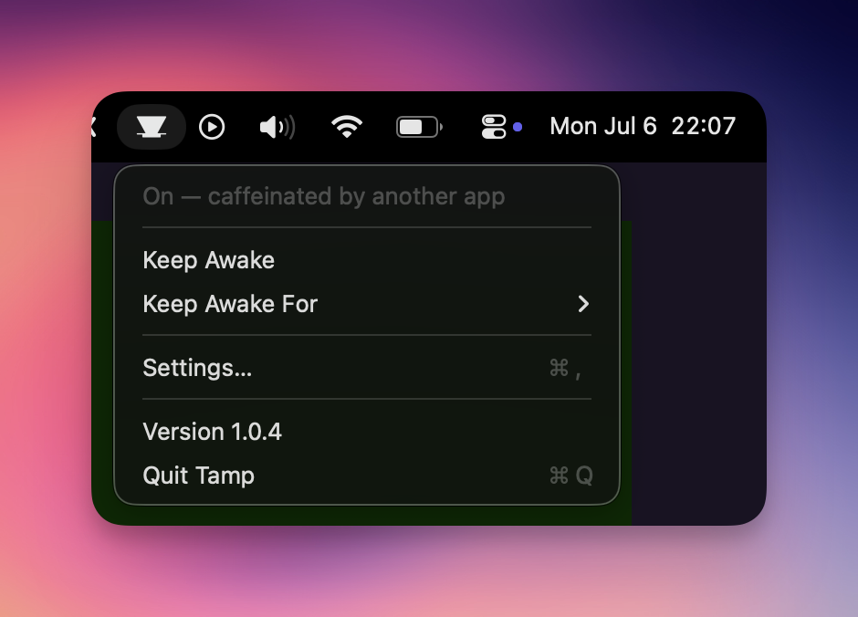
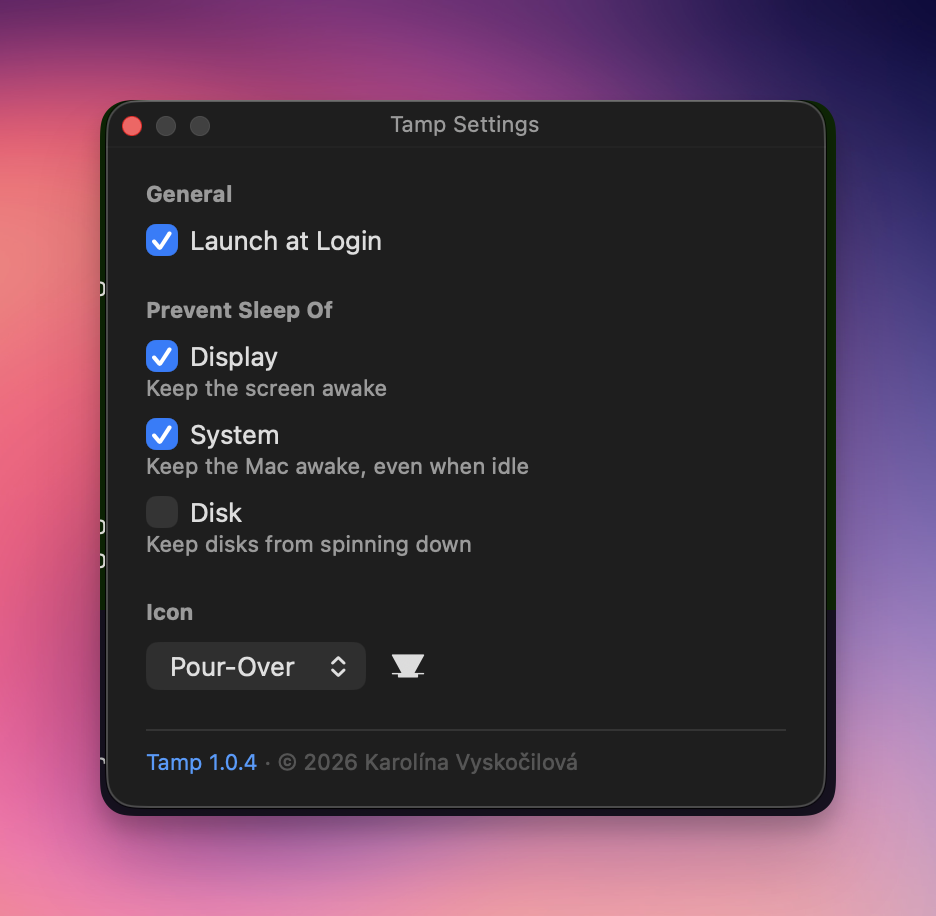

Free & open source · macOS 13+
Tamp keeps your Mac awake.
And tells you when something else does.
Tamp is a menu bar app and CLI wrapping Apple's built-in caffeinate — and the only keep-awake tool that shows which app is caffeinating your Mac.
Universal binaries (Apple Silicon + Intel) · no Xcode needed · MIT


Why Tamp
It tells the truth
If any other tool — Amphetamine, a script, an AI agent's hooks — runs
caffeinate, Tamp's icon fills and the status names the culprit:
"caffeinated by bash (pid 1234)". No more hunting through Activity Monitor
to learn why the Mac won't sleep.
One state, two faces
The menu bar app and the tamp CLI share a single source of
truth. Toggle in the terminal, watch the icon change. Set a timer in the
menu, read it with tamp status --json.
Nothing exotic
Keep-awake is Apple's own caffeinate, wrapped — not
reimplemented. Display, system and disk sleep controlled independently.
MIT-licensed, ~1 MB, no background daemon.
Command line
$ tamp on # keep awake until turned off $ tamp for 2h # … for two hours $ tamp until 17:30 # … until half past five $ tamp on --no-display # let the screen sleep, keep the Mac up $ tamp status ☕️ On — caffeinated by bash (pid 1234). $ tamp off # yours stops; other apps' sessions are never touched
Real-world integration
This is why Tamp shows when another app is caffeinating your Mac: I got tired of not knowing if Claude Code was still working. A couple of lines in my Claude Code hooks mirror straight into Tamp's state — same icon I already glance at for everything else.
Compared
| Tamp | Amphetamine | KeepingYouAwake | Caffeine | |
|---|---|---|---|---|
| Menu bar app | ✓ | ✓ | ✓ | ✓ |
| CLI sharing state with the app | ✓ | — | — | — |
| Names who else keeps the Mac awake | ✓ | — | — | — |
| Keep awake until a clock time | ✓ | ✓ | — | — |
| Homebrew install | ✓ tap | App Store | ✓ cask | ✓ cask |
| Open source | ✓ MIT | — | ✓ MIT | ✓ MIT |
Based on each project's published documentation, July 2026. Amphetamine's trigger system covers automation Tamp doesn't attempt — if you need that, use Amphetamine.
Questions
Is Tamp free?
Yes — free and open source under the MIT license.
What macOS version does it require?
macOS 13 Ventura or later. Homebrew installs universal binaries for Apple Silicon and Intel.
Do I need Xcode?
No. Installing via Homebrew needs nothing extra; building from source needs only the Swift 6+ toolchain (Command Line Tools are enough).
How is it different from Amphetamine or KeepingYouAwake?
Tamp ships a CLI and a menu bar app that share one state, and it uniquely shows which app is keeping your Mac awake — naming the process behind the caffeinate — instead of pretending the machine is free to sleep.
Something keeps my Mac awake — how do I find out what?
Run tamp status or glance at the menu bar: Tamp names the process that launched the caffeinate, e.g. "caffeinated by bash (pid 1234)" — no hunting through Activity Monitor. If the launcher already exited, Tamp shows the orphaned caffeinate's own PID so you can still deal with it.
Does it drain my battery?
No. Keep-awake itself is Apple's native caffeinate; Tamp adds a menu bar icon and a lightweight in-process check that notices external keep-awake activity while idle.
Can I keep only the display awake?
Yes — display, system and disk sleep are independent, per run (tamp on --display --no-system) or as saved preferences in Settings.
How do I uninstall it?
brew uninstall tamp, delete /Applications/Tamp.app, and optionally remove ~/Library/Application Support/Tamp. The repo ships an uninstall.sh that does all of it, login item included.
How do I report a bug or contribute?
Open an issue or pull request on GitHub — I read all of them. For anything else, email karolina@kybernaut.cz.